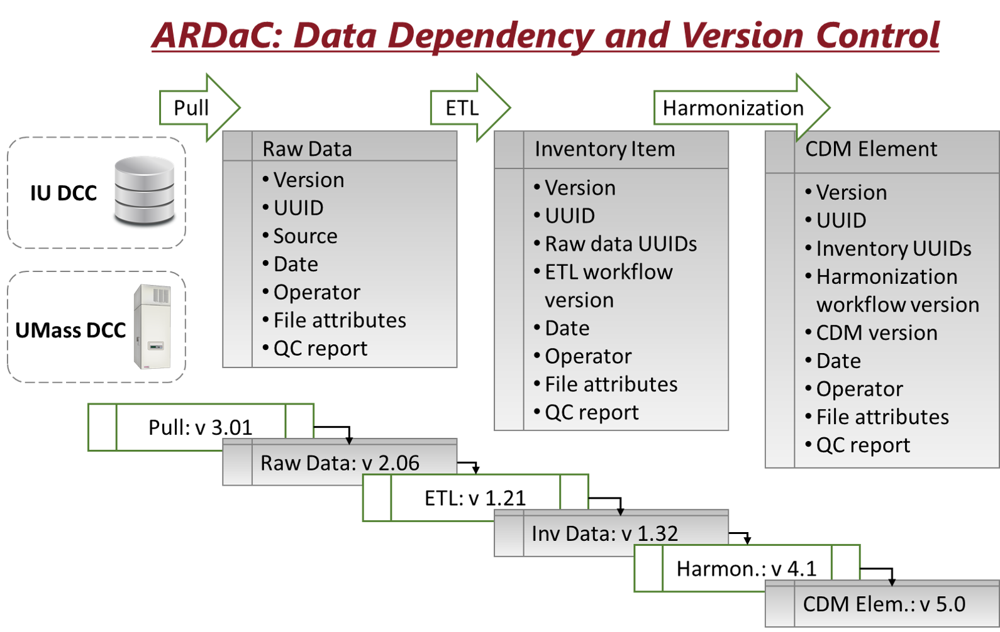
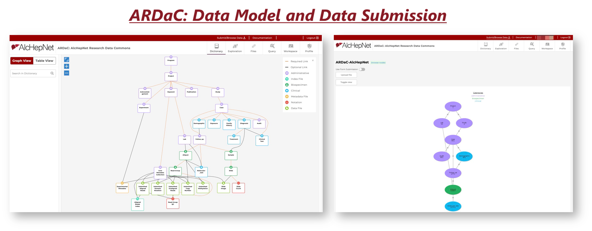
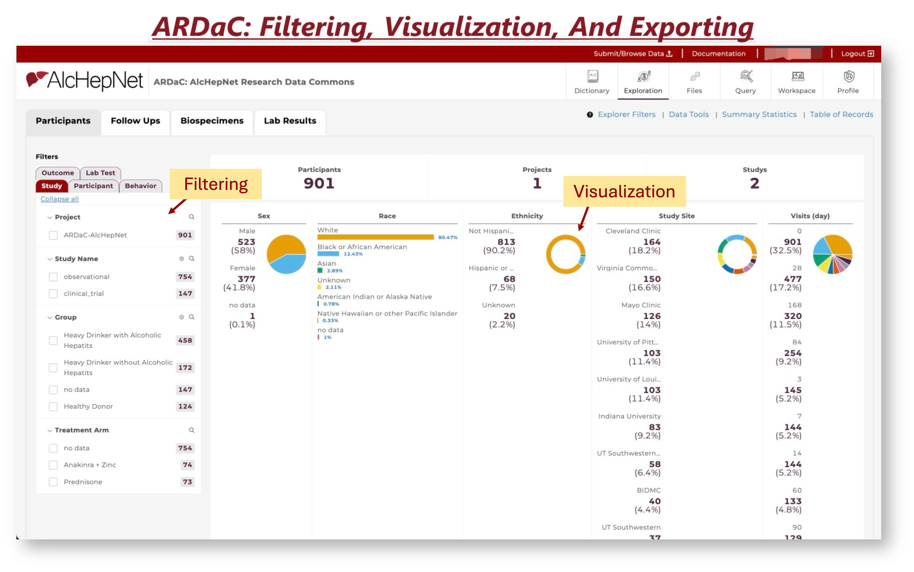
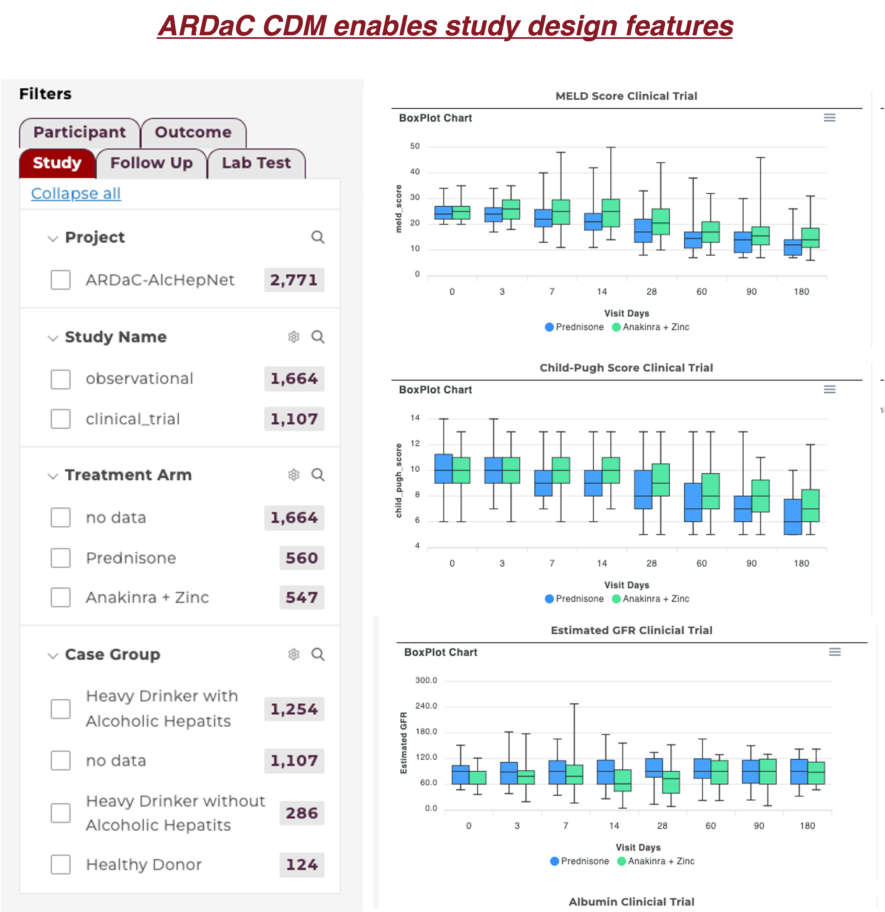

Functionalities
The novel ARDaC system supports the representation of behavioral and pathologic data unique to alcoholic hepatitis and facilitates data filtering, querying, visualization, and exploring, which are specific to the AlcHepNet clinical studies. Besides the general data query and visualization functions, ARDaC allows data exploration using study-related criteria such as the study cohorts or arms, alcohol use history, alcoholic hepatitis treatments, treatment outcomes such as mortality and liver transplantations, and liver function measures as well as prognostic metrics such as the MELD scores, omics data availability and biosample availability, and omics-derived features such as differentially expressed genes and enriched signaling pathways. The ARDaC system also provides a GraphQL query interface, a cloud-based workspace, and R and Python programming environments for in-depth data analysis. Specifically, ARDaC allows users to check sample availability, visualize and evaluate the synergy of their data generation plans with existing data and funded projects, and plan for new data generation plans. The ARDaC system is available at github.com/Su-informatics-lab/ardac and ardac.org. ... Read More




In summary, ARDaC is the central data hub connecting data of multiple modalities across clinical and translational teams. It is the engine that drives AlcHepNet research projects, the data interface between the AlcHepNet consortium and other research data commons, and the research nexus that ignites new research and collaborations.